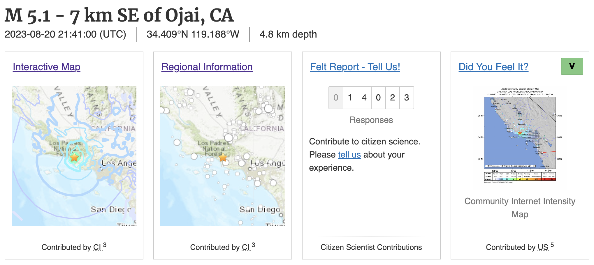
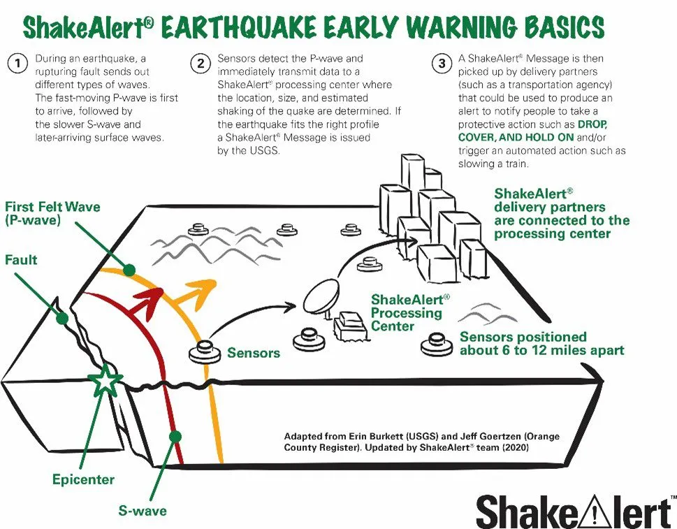

Observational Seismology
(Machine Learning Seismology)
Large destructive earthquakes
| Year | Magnitude | MMI | Deaths | Injuries | Event |
|---|---|---|---|---|---|
| 2023 | 7.8 | XII | 57,350+ | 130,000+ | 2023 Turkey–Syria earthquake |
| 2011 | 9.1 | IX | 19,747 | 6,000 | 2011 Tōhoku earthquake and tsunami |
| 2008 | 7.9 | XI | 87,587 | 374,177 | 2008 Sichuan earthquake |
Hayward Fault

The California Memorial Stadium

An estimated magnitude of 6.3 or greater.

Many more small earthquakes - California - Alaska - Hawaii - Oklahoma & Texas
Seismic Networks - California - Alaska - Hawaii - Oklahoma & Texas
Large-N and Large-T challenge

Mining the IRIS dataset

What information can we get from seismic data?
- Take a look at seismic waveforms: ncedc.org/waveformDisplay/

- Can you find an earthquake?

What information can we get from seismic data?
- Take a look at a recent earthquake: M 5.1 - 7 km SE of Ojai, CA 
How are information extracted/determined?
- Detection of earthquakes
- Earthquake origin time and location
- Earthquake magnitude
- Earthquake focal mechanism/moment tensor
- Shake map/ground motion prediction
- Earthquake early warning
- "Did you feel it?"
What additional information can we get from millions of earthquakes?
- Earthquake catalog
- Earthquake statistics
- Earthquake triggering
- Earthquake forecasting
- Fault zone structure
- Seismic tomography
- Volcano, glacier, and landslide monitoring
How to use these information?
- Monitoring earthquakes and earthquake early warning
- Understand earthquake source physics
- Understanding the Earth's structure
- Applying seismology to environmental science, planetary science, climate science, etc.
Earthquake monitoring and earthquake rick?
- Before an earthquake
- A few seconds after an earthquake
- Hours/days after an earthquake
- Years after an earthquake
Before an earthquake

- Simulating earthquake scenarios
Hayward Fault Scenarios

A few seconds after an earthquake

-
MyShake https://myshake.berkeley.edu/
-
Mobile phones as seismometers Android EEW

Hours/days after an earthquake
- Emergency response and damage assessment Fault Dimensions
| Magnitude Mw | Fault Area km² | Typical rupture dimensions (km x km) |
|---|---|---|
| 4 | 1 | 1 x 1 |
| 5 | 10 | 3 x 3 |
| 6 | 100 | 10 x 10 |
| 7 | 1,000 | 30 x 30 |
| 8 | 10,000 | 50 x 200 |

Years after an earthquake
- Understand earthquake rupture process
- Improve ground motion prediction models (GMPE)
- Improve hazard map and building codes
- Earthquake forecasting models

How can we better monitor earthquakes?
Instrument side (How to collect more and better data?)
- Dense seismic networks
- New sensors: broadband seismometer, nodal array, and DAS (Distributed Acoustic Sensing)
- Remote sensing, LiDAR, etc.
How can we better monitor earthquakes?
Algorithm side (New techniques for processing data and extracting information?)
-
Many signal processing algorithms, such as, STA/LTA, template matching, filtering, etc.
-
Machine learning & deep learning
-
Numerical simulation
-
Inverse theory
-
Statistical analysis
Things to learn in this course
- Faimilar with seismic data
- Learn the state-of-the-art machine learning methods for seismic data processing
- Process seismic data, build seismic catalogs, and analyzing seismicity
- Learn basic inverse theory for earthquake location, focal mechanism, seismic tomography, etc.
The advantages of machine learning
Deep Learning (Deep Neural Networks) is a new paradigm of software development
Applications of deep learning in seismology
- Neural Networks
- Automatic Differentiation
- Optimization/Inversion
Machine Learning and Inversion
| 09/18 | Seismic Data Processing |
| 09/25 | Earthquake Detection |
| 10/02 | Phase Picking & Association |
| 10/09 | Earthquake Location & Relative Location |
| 10/16 | Focal Mechanism & Moment Tensor |
| 10/23 | Earthquake Statistics |
| 10/30 | Ambient Noise |
| 11/06 | Seismic Tomography |
| 11/13 | Full-waveform Inversion |
Grading
- Attendance and participation (50%)
- Final project (50%)
- Project proposal (10%)
- Project presentation (20%)
- Project report (20%)
- Extra credit (up to 10%)